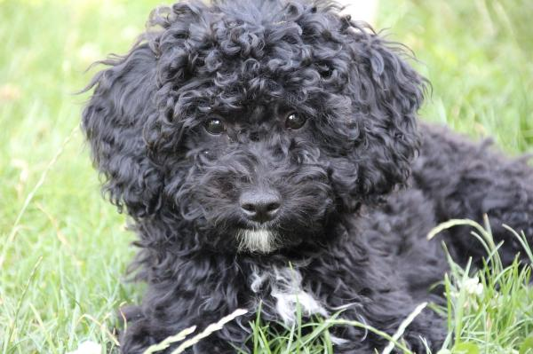
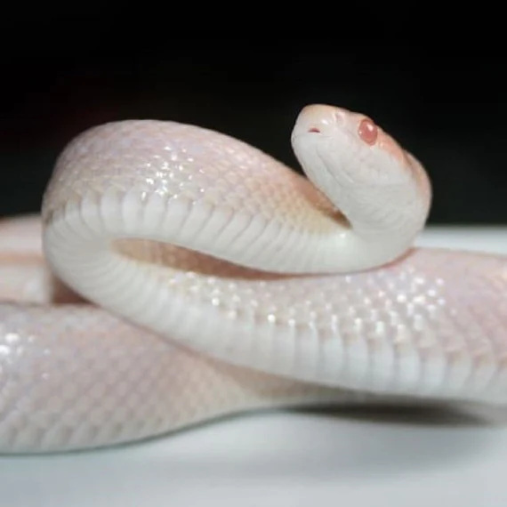
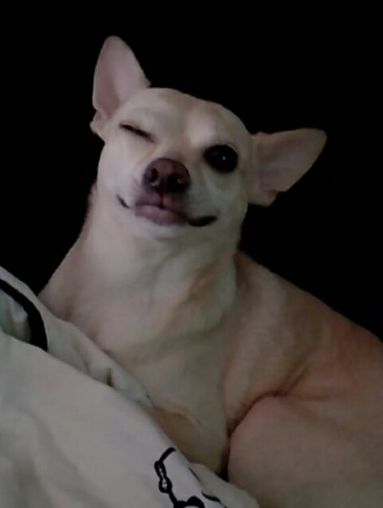

About Us
Mi nombre es Jenifer Moyano Sanromá, tengo 17 años y soy de Barcelona-España, cuando tenía 6 años me mude junto a mi familia a Ecuador (el país de mi padre) y volví después de 11 años.
Mi nombre es Inma y actualmente tengo 21 años, estudié artes en la Escuela de San Telmo y entre en la carrera de Diseño gráfico la cual deje, al año empece a estudiar por mi cuenta algunos lenguajes y a los 19 entre en un ciclo superior de Desarrollo de Aplicaciones Web.
Our Hobbies
Aficiones de Jenifer
- Escuchar música
- Leer
- Ver anime/manga
- Escribir
Aficiones de Inma
- Tocar la guitarra
- Pintar
- Ver series
- Jugar videojuegos
Our Pets
Mascota de Jeni
La perrita de Jenifer se llama Niña, tiene 8 años y su raza es french poodle mini de pelaje color negro y con el pecho de color blanco. Es una perrita muy juguetona ademas de dormilona y su comida favorita es el pollo.
Mascota de Inma
Este pequeñin se llama Ryu, es una serpiente de maiz fase snow y que ya tengo de hace casi 5 años. Es muy tranquila en comparación de su hermana Shiva (mi otra serpiente), que es mucho mas revoltosa.
Mascota de Inma
Este pequeño es Pancho, un perrito que supuestamente un chihuahua, tiene unos 12 años y es muy jugueton pero lo que mas le gusta es dormir, también es muy comilo, podria estar todo el dia comiendo.